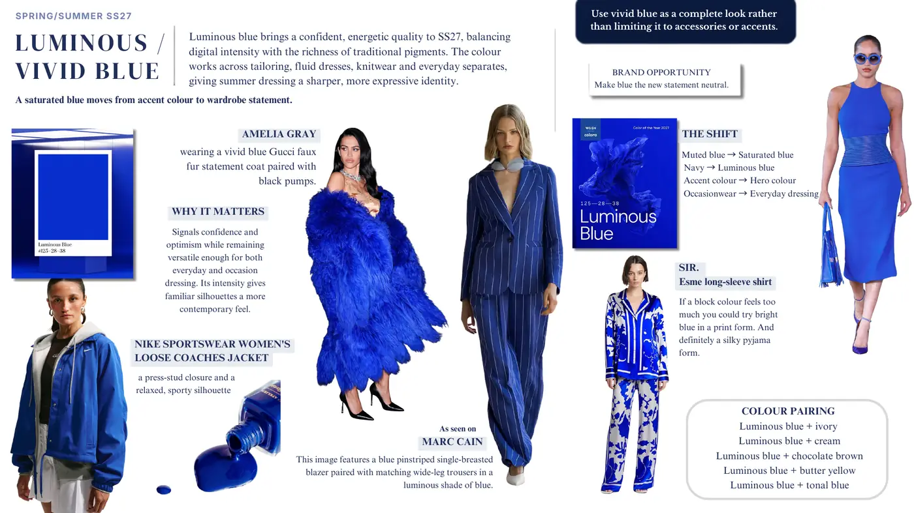

Colour01Womenswear
Luminous / Vivid Blue
A saturated blue moves from accent colour to wardrobe statement.
flip for the brief ↻
01
Luminous / Vivid Blue
The shift- Muted blue→Saturated blue
- Navy→Luminous blue
- Accent→Hero colour
Marc Cain · Amelia Gray · Nike Sportswear
The opportunity“Make blue the new statement neutral.”